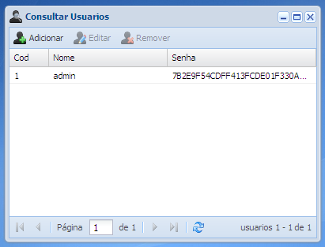

Tela de cadastro de usuários do sistema
Essa é a tela de cadastro de tipos de usuários do sistema, nela é possível adicionar novos usuários ainda não cadastrados no sistema, que serão utilizados no login e utilização do sistema.
